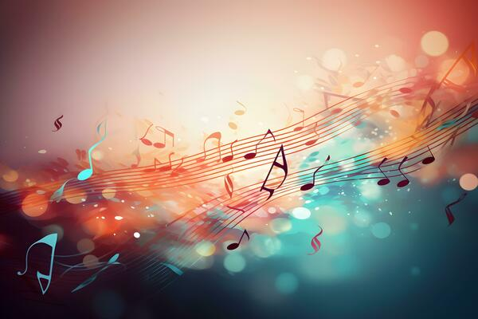

O que você irá ver neste blog?
Aqui você irá ver letras de músicas famosas no piano para começar, aprender e praticar o piano virtual.
Além disso você irá ver dicas e truques de como funciona a partitura de um piano virtual ou como chamamos de "sheets".

É possível tocar piano pelo computador?
Caso você não saiba, hoje em dia é possível tocar piano em um computador, sem que haja necessidade de comprar um piano ou teclado de verdade.
Bastando apenas entrar em alguns sites ou jogos de piano virtual.
Porém, assim como um piano de verdade, é preciso técnicas e entendimento das letras para conseguir tocar com perfeição.
Por isso, neste site você vai conseguir pelo menos entender um pouco do básico e talvez até tocar sua própria música.
Vamos aprender?
Para começarmos, vamos pegar um exemplo de sheet simples para entender melhor como tocar...
a-s-d-f-g-g-h.
Nesse caso, o que deveria ser feito? É simples, você deverá tocar em seu computador, as teclas que aparecem.
Então será tocado as teclas a,s,d,f,g e h.
Notas brancas e Notas Pretas
No piano normal existem as notas brancas e as notas pretas.
Então, você deve estar se perguntando como isso seria representado no teclado de computador?
As notas brancas são as teclas do computador, como dito anteriormente. Ou seja, vão de 1 até 0 e de Q à M no teclado.
Mas e as notas pretas? Como elas são representadas?
A resposta está na tecla shift, porque ela transforma todas as notas brancas do teclado em notas pretas.
Geralmente, são os símbolos do teclado, por exemplo: ! - @ - % - * entre outros.
Isso ocorre, porque estes símbolos seriam usados em uma escrita de texto normal usando o shift no teclado. Sendo agora, substituídos por notas pretas.
Acordes [ ]
Aprofundando um pouco, chegamos nos acordes. São representados nas sheets, como colchetes [ ].
Toda nota que estiver dentro dos [ ] são feitas para ser tocadas, juntas ao mesmo tempo ou o mais rápido possível para não perder o efeito.
Por exemplo, se uma nota for [f9] você deve tocar a letra f e o número 9 ao mesmo tempo.
Mas e se a nota for [Oy]?
Se o acorde contiver notas pretas e brancas, você deverá pressionar shift para a nota "Q" e rapidamente tirar, para clicar "y".
Tempo musical -
O tempo nas sheets são um pouco diferentes e requer uma interpretação na maioria da vezes.
Por exemplo: " i y e y i y e y " o espaço entre as notas, geralmente equivale à 1 segundo de duração. Assim, como o - entre as notas podem equivaler a uma pequena pausa de 1 segundo também: " i-y-e-y-i y-e-y "
No entanto, se as notas estiverem muito juntas isso deve significar mais velocidade para tocar.
Por exemplo: [etu]j[etuj]k[ql]
Transposição
Assim como no piano, é possível colocar e alterar transposições para tocar uma música.
E o que seriam as Transposições?
As transposições ajudam a mudar a afinação do teclado ajustando para cima ou para baixo um numero desejado de semitons.
Ela funciona em passos de um semitom, ou seja, ao ajustar o “Transpose” em “-1” e tocar a tecla Dó, o que se vai ouvir é uma nota Si, ou seja, uma nota um semitom abaixo; ao ajustar em “-2”, dois semitons abaixo (ou seja, um tom) e assim sucessivamente.Por isso são muito usadas para mudar o tom de uma música e podem melhorar ou piorar a harmonia musical da música.
Que tal Praticar?
Bem, com isso. Acho que chegamos ao ponto que em você já pode começar a tentar praticar.
Clique nos links acima, escritos "música 1, 2 ou 3" para ver as sheets e usar elas em um piano virtual.
boa sorte e divirta-se!